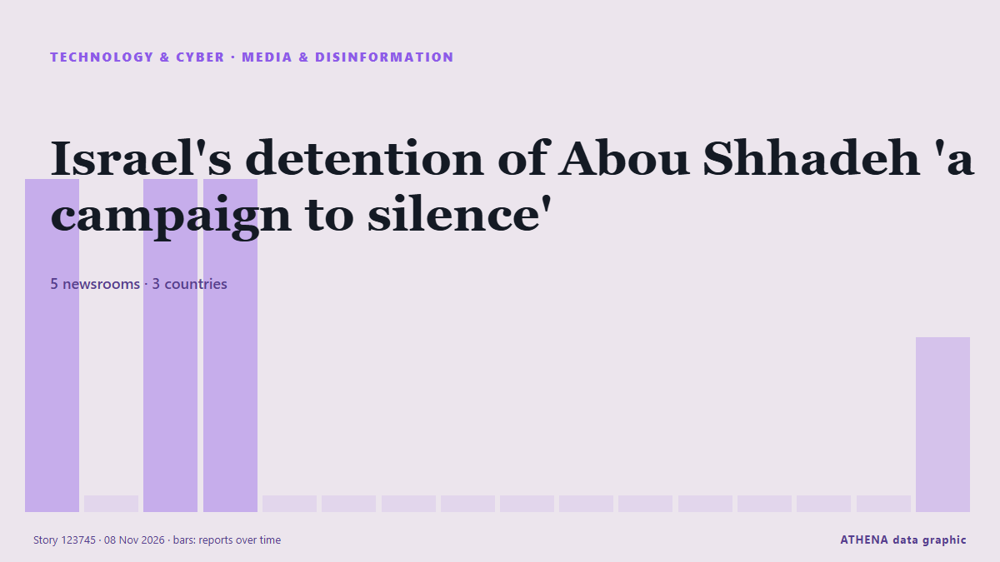

Media & disinformation
SponsoredPresented by  Cybernetics and Artificial Intelligence Lab Welcome to the Cybernetics and Artificial Intelligence Laboratory, established at the Department of Business Administration of the National and Kapodistrian University of Athens. The lab is headed by Professor Dimitrios Thomakos. The lab aims to do research that can be published in top venues. Our research uses tools and methods of Artificial Intelligence, and lies in the following areas: - Forecasting - Decision making - Cyber security - Finance We are always looking forward to collaborating with exceptional students!
Cybernetics and Artificial Intelligence Lab Welcome to the Cybernetics and Artificial Intelligence Laboratory, established at the Department of Business Administration of the National and Kapodistrian University of Athens. The lab is headed by Professor Dimitrios Thomakos. The lab aims to do research that can be published in top venues. Our research uses tools and methods of Artificial Intelligence, and lies in the following areas: - Forecasting - Decision making - Cyber security - Finance We are always looking forward to collaborating with exceptional students!
| 26 Oct | 0 |
|---|---|
| 27 Oct | 0 |
| 28 Oct | 0 |
| 29 Oct | 0 |
| 30 Oct | 0 |
| 31 Oct | 0 |
| 1 Nov | 2 |
| 2 Nov | 1 |
| 3 Nov | 0 |
| 4 Nov | 3 |
| 5 Nov | 6 |
| 6 Nov | 7 |
| 7 Nov | 1 |
| 8 Nov | 1 |

Israel's detention of Abou Shhadeh 'a campaign to silence'
Israeli forces detained Palestinian journalist Abed Abu Shehadeh over an interview with Azmi Bishara, as threats against Arab political leaders intensified. from The New Arab
10th TRT World Forum Unveiled in Istanbul, Some 150 Specialists from 43 Countries Participating
Annual event brings together global leaders, academics, journalists this year under theme 'A World Without a Center: Who Leads When the Rules Run Out?' from Anadolu Agency (English)
Weekly Roundup 06 November 2026
The investment fund probe has expanded to serving regulators, former senior financial officials and political figures, while journalists covering the scandal face prison sentences of up to nearly 19… from bianet English
Staff at RTE campus evacuated after bomb threat
It comes after bomb threats were sent to airlines, including an Aer Lingus flight from Dublin, over recent days. from The Irish News (Belfast)
World in pictures, November 4, 2026
The best photos from the international wire agencies as chosen by The Age picture editors. from Sydney Morning Herald
‘We will go after this’ – Taoiseach vows to hunt down those behind bomb threats to Irish Independent and other media outlets
A threat said that a bomb would detonate on the site within 45 minutes. from Irish Independent
Russell Brand’s barrister reports himself to regulator after tirade against journalist
Ian Winter told Rosamund Urwin shortly after guilty verdict, 'You f***** it' from Irish Examiner
Salon is shutting down after 31 years
Salon launched 31 years ago as one of the first online-only news magazine outlets, and it announced today in an unsigned post that it's ceasing publication. from The Verge
Yoani Sanchez Is Home and Describes Her Kidnapping and Jail
I witnessed how dozens or even hundreds of people are detained every day in Havana simply because their identity cards do not list an address in the capital. from Havana Times
Federal Minister for Planning, Development and Special Initiatives, Ahsan Iqbal chairing a meeting of the Joint Committee on ICT Education Reforms.
Associated Press Of Pakistan Ahsan Iqbal calls for establishment of Pakistan Tourism Authority to promote tourism Federal Minister for Planning, Development and Special Initiatives, Professor Ahsan… from APP (Associated Press of Pakistan)
Fact check: UK trade with the US and taxes 100 years ago
Round-up of fact checks from the last few days compiled by Full Fact. from Evening Standard (London)
UK broadcaster Sky receives security threat amid wave of bomb scares across Europe
Sky, owned by US media company Comcast, says it is among several media organizations receiving security threats. from Anadolu Agency (English)
Instagram brings Edits to desktop to take on CapCut
The move puts Edits in more direct competition with ByteDance's CapCut, the video-editing app Meta sought to challenge when it launched Edits last year. from TechCrunch
Fate of Japanese ‘journalist’ detained in Russia depends on investigation results — MFA
Maria Zakharova specified that the investigation "is being conducted by the FSB in full compliance with Russian law" from TASS (English)
Ethiopia: Ethiopia Suspends the Reporter Indefinitely in Escalating Assault On Independent Media
[CPJ] Nairobi -- The Committee to Protect Journalists calls on Ethiopian authorities to immediately lift the indefinite suspension of The Reporter, one of the country's oldest independent newspapers. from AllAfrica
Apple spyware alerts reach German MPs and journalists in 99 countries
Germany’s cybersecurity agency has told lawmakers who got Apple’s spyware warnings to treat their iPhones as possibly compromised. from The Next Web